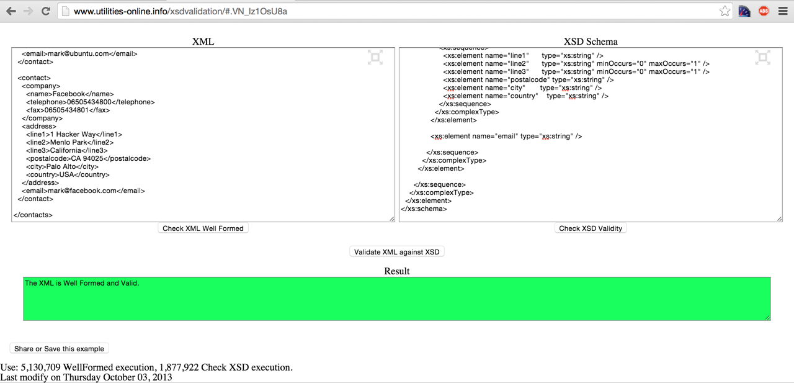

This is the documentation for the 2014/2015 Birkbeck University of London TMA (Tutor Marked Assignment).
The webpage for this assignment can be found at:
http://titan.dcs.bbk.ac.uk/~jgomes01/xmtma
The github repository for this module can be found at:
https://github.com/jbonigomes/xml
The picture below illustrates that the files provided for this assignment are well formed and have passed both DTD and Schema validations.

The task for this assignment involved creating an address book that captures contacts data in an XML format. The XML file must contain at least 10 different contacts and should capture at the very least the following information:
First and foremost, in addition to the items mentioned above, the final XML document also features the following elements:
The first round of though was placed on grouping which elements are present only in a company, which elements are present only in a person and which elements are present in both.
It was decied that both company and person would have an address and a contact email. The unique elements for a person and a company where then grouped inside the 'person' and 'company' elements respectively.
The only suitable data type for all simple elements was string, named string under the Schema and #PCDATA under the DTD.
The final step was to apply the business rules, naming which elements where allowed to repeat and which ones were not mandatory, the following list explain those:
Although this assignment is rather simplistic, the final outcome of the XML document does not make any use of namespaces, the reason behind this decision comes from the fact that I could not get the XML Schema to validate an XML namespaced tag.
This assignment had three repeating element names that had to be ajusted, in order to correctly validate the documents without repetition. Those element names were, 'telephone', 'fax' and 'name', both appeared under 'company' and 'person'. In order to work around this problem, all telephone numbers under 'person' received a prefix named 'telephone' followed by the type name. In addition, a persons 'name' was updated to 'firstname' and 'surname' to 'lastname' for consistency.